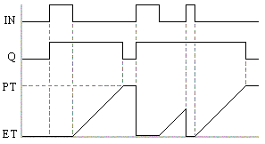
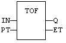
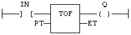

Function Block
Timer off, without/with reset.
|
Name |
Type |
Description |
|
IN |
BOOL |
Timer command. |
|
PT |
TIME |
Programmed time. |
|
RST |
BOOL |
Reset (TOFR only). |
|
Name |
Type |
Description |
|
Q |
BOOL |
Timer elapsed output signal. |
|
ET |
TIME |
Elapsed time. |

The timer starts on a falling pulse of IN input. It stops when the elapsed time is equal to the programmed time. A rising pulse of IN input resets the timer to 0. The output signal is set to TRUE on when the IN input rises to TRUE, reset to FALSE when programmed time is elapsed.
TOFR is same as TOF but has an extra input for resetting the timer.
In LD language, the input rung is the IN command. The output rung is Q the output signal.
PT can be entered as a TIME literal. e.g. T#100ms, T#3s250ms, T#3h5m, T#16d8h56s.
MyTimer is a declared instance of TOF function block.
MyTimer (IN, PT);
Q := MyTimer.Q;
ET := MyTimer.ET;

